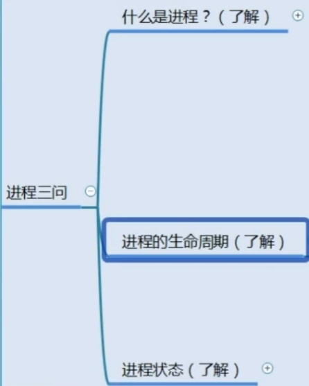

4-001.进程的灵魂三问

什么是程序？
进程是已启动可执行程序的运行实例

下面file1.txt就是一个程序

白话实例：写在纸上的购物单是”程序”，我去买的过程叫做”进程”
4-002.进程的资源占用
进程标识：PID、PPID
进程是一个活的文件，程序是一个死的文件
四个分配：磁盘分配、内存分配、CPU分配、网络分配
4-003.进程的状态详解
进程的生命周期（了解即可）：
进程状态（了解即可）：

4-004.进程的状态ps工具使用方法
静态查看进程：ps（precess status）
查看进程：ps aux

列表汉语：
重要内容如下：
PID：进程ID，靠这个PID杀死进程
STAT：进程状态

查询指定程序file1.txt：
ps aux | grep vim

root：用户 9369：PID编号 0.0：cpu占比 0.5：内存占比 229656：虚拟内存
9444：真实内存大小 pts/1：仿生终端 S+：进程状态（睡眠） 10:35：进程开启时间
0:00：占用CPU总时长 vim：程序名
4-005.进程的状态ps工具使用技巧
进程排序
语法：ps aux –sort %cpu

默认情况下是升序排列（减号是降序）
ps aux –sort -%cpu | head -5(只看进程头部前五行，以降序标识，用于查看最占CPU的前五个进程)

gnome：桌面
用相同方法查看内存men
ps aux –sort -%men |head -5

进程的父子关系
语法：ps -ef（查看父系进程）

PPID：父系进程的PID
自定义显示字段：ps axo 编号

4-006.进程的状态TOP工具介绍上
动态查看进程：top（实时更新，查看系统进程的大概信息）

前五行详解：
top-：程序名-系统时间-运行时间-登录用户数-CPU负载-0-0-0分钟
Tasks（任务数量，即进程数量）：
%CPU（当前系统的CPU占比）：

MiB Mem（内存占用）：

MiB swap（虚拟内存占用）：

4-007.进程的状态TOP工具介绍下

PR、NI：程序优先级
VIRT、RES、SHR：内存、共享内存、虚拟内存使用情况
M：查看内存占用最大的进程
P：查看CPU占用最大的进程
n：进程PID会以一定顺序排列
Z：换颜色

top -d 1
-d：指定刷新频率
指定top查看：
（1）查看进程PID

（2）使用top加-p选项输入进程的PID，即可指定查询
top -d 1 -p 9369

4-008.进程的管理工具KILL
语法：kill -信号代码 PID
信号种类：

常用信号代码为：-9（强制退出）-15（正常退出）-19（停止）-18（继续）
-15：

-9：

-18，-19：


Sukoshi
贵在坚持
28
0
0